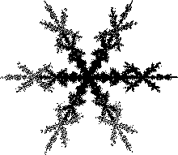

|  |
| Snowflakes have approximate six-fold symmetry: rotating a
snowflake 60 deg about its center leaves it more-or-less unchanged. |
| Two pieces
of the decomposition are easy to see: |
| the middle is a copy of the snowflake
shrunk by a factor of r = s = 0.6, and |
| the outer half of the right branch
(at 3 o'clock, for those who remember the faces of analogue watches) is a copy
shrunk by r = 0.4 and s = 0.2 in the y-direction (note
this piece is flatter than the whole snowflake), and translated in the x-direction
(e = 0.6). |
| What about the other five branches? |
| Note their orientation is not the
same as the whole snowflake, so unlike the Queen Anne's Lace example, translations
will not suffice. |
| We must use rotations and translations, or is there an easier way? |
| Rotating the entire snowflake 60° about its center will move
the 3 o'clock branch to 1 o'clock. |
| Rotating again will move the 1 o'clock branch
to 11 o'clock, and so on. |
| The third rule below will fill in the rest of the snowflake. |
|
| More carefully, with these rules the Random Algorithm
(to be seen later) generates
the snowflake. (The Random Algorithm still will generate the snowflake, so long as on average the
transformations applied are contractions.) |
| The Deterministic Algorithm gives a different result, at least if the
starting picture is an extended shape such as a square. With the starting picture a point, the
Deterministic Algorithm works just fine. |
| (Make a guess, then try it.) |